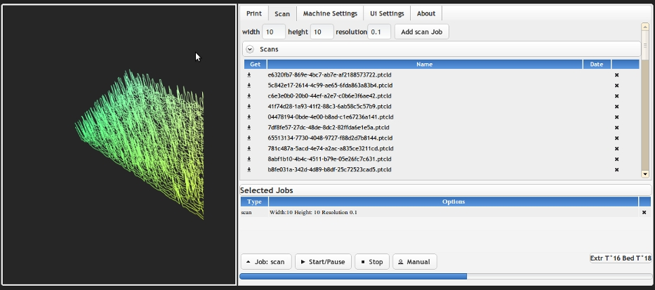
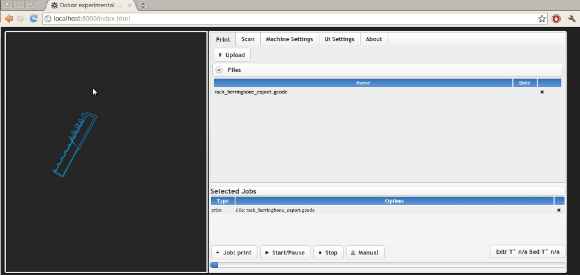
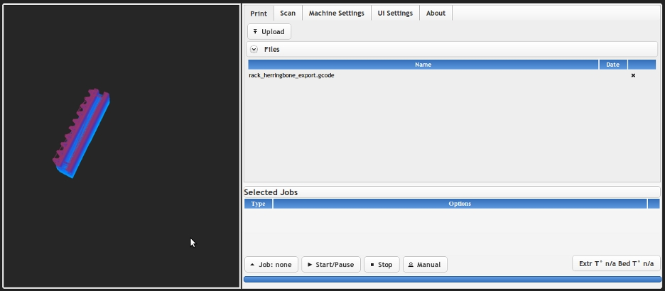
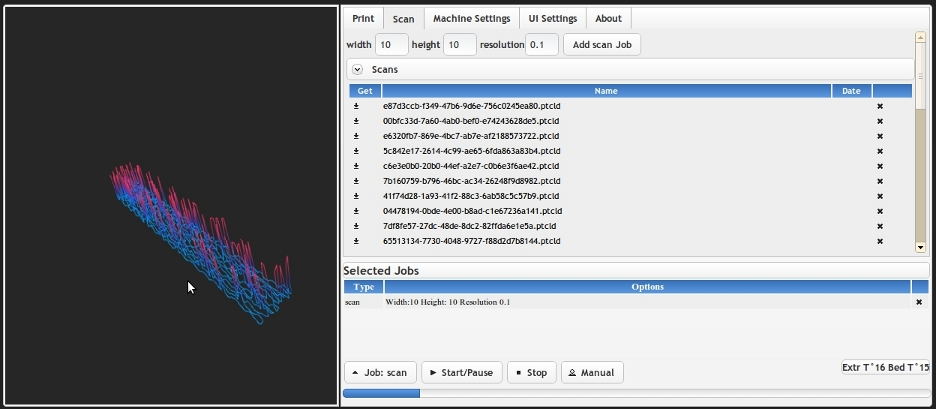
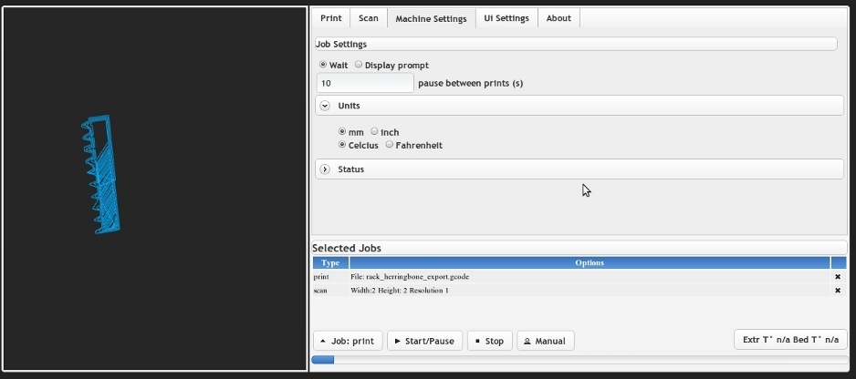
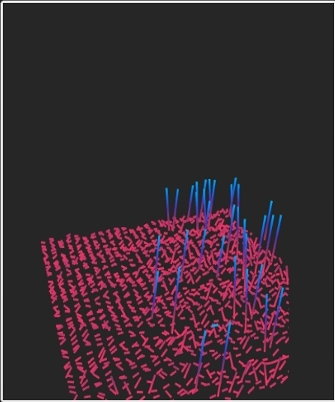
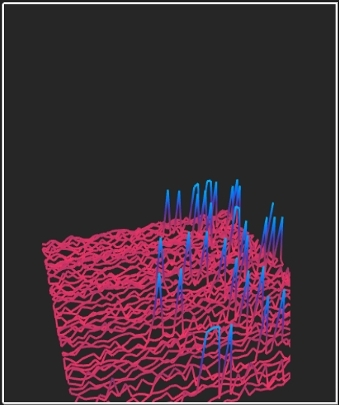
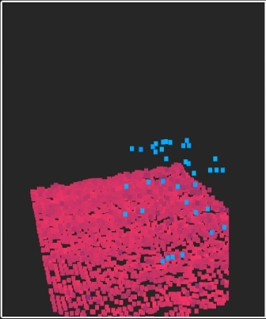
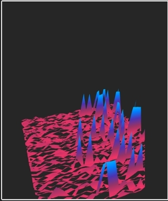

2011-03-03
Doboz-Web: Reprap/3d scanner remote control using python, javascript, webgl

Up until now, the home-brew interface i was using to interact with my repstrap machine was using PyGtk , but i have had a ton of problems with gtk, (segfaults etc), oh and the ui was not windows compatible ( making gtk play nice with other threads requires some changes to the rest of the code i frankly didn't like, but hey that is just my opinion), so i decided to change my repstrap control system to a server/client approach and go "wild" a bit! Here are the results , after the break !
Why the change?
- it allows to decouple the interface from the actual GCode sending process/printer control completely! No more failed prints because of some UI failure
- also related : no more "oops, i accidently closed the printing program " moments ...
- remote control : start prints from anywhere ! (will be particularly useful in the future as Repraps get more automated)
- i also needed a way to integrate openGL graphics (optional) into the general interface, and with the amazing possibilities of WebGL for 3d content inside browser , it was a no-brainer (this will be used both to display the print progress aswell as the in-progress update to the 3d scanner )
- this is as multi-platform as it gets
- my other main project, the Hydroduino , already works on a similar basis : a central application core, accessible and controllable via http
- Beyond the simple browser=> server communication i also needed to get realtime feedback from the printer , to show print progress , draw the latest axis movements etc
Results:
Implementation details: server :
- for now i use an awfull brute force polling approach : send a print progress request to the server every 10 ms ...and wait for the ajax answer (yes, ouch!)
- in the end of course that is completely insane , so i will replace it with long polling and/or something along the lines of Comet or WebSockets
- unfortunately Bottle/ basic Wsgi does NOT support long polling (every request response is blocking) , even though i found workarounds (monkeypatching with gevents)
- More generally, initially i was using the simple_htttp_server implementation for the webserver , and it was damn slow and unreactive, but once switched to Tornado , however i was really impressed ! No reaction delay, fast updates etc
- right now, because of the heavy handed approach, correct synching of multiple clients is not fully functionnal, until i switch to a better architecture
- the server side includes both the "reprap manager", and the web server , for static files and ajax , and is using Bottle
- the 3d scanning is still in the early stages, but works and reuses elements from one of my previous project
Implementation details: client :
- most of the communication between the client and server goes through ajax requests
- you can upload gcode files to print directly, and enqueue a series of print tasks (this would be particularly useful for things like the Thing-O-Matic or any other 3d printer that allows continuous prints
- the 3d view is implemented in Webgl, and allows you to view , depending on whether you are printing or scanning, the movements of print head (based on the gcodes sent to the printer), or the point cloud data if you have just scanned an object:
Printing: showing the movements of the print head (start)


Scanning: showing the point cloud of the scan, which can then be saved locally

- all of this, including the manual sending of GCodes to the printer, status and, temperature retrieval etc, is controlable from the interface (basic for now, lots to do)
Machine settings:

- There are also different "modes" to view the 3d data, mostly for 3d scanning (ok, and eye candy too:): it will be expanded upon in the future
](./assets/viewer-modes-linestrip-1.jpg)](./assets/viewer-modes-trianglestrip-1.jpg)
- Small note: i did not go the full WebGl route for the interface because of general availability /speed : webgl is quite good, but as you can read above, not that fast on all platforms, also making it mandatory would reduce the usefulness of the interface
- this was my first attempt at WebGl , and i relied heavilly on the excellent tutorials and code by Giles Thomas over at http://learningwebgl.com
- Using Jquery and Jquery UIand a bit of Jquery Ui notify ) made creating the interface a breaze. Using Jquery Ui also meant easier support for styling ( for example using the very professional Absolution Theme)
Ok i confess , this is really for pure geek factor , but can also be really practical :
- I tested it out both on a smartphone : HTC desire and an Archos 101 Android tablet : and was very surprised to see that everything is still snappy, and with the latest firefox mobile beta, the webgl part works at "acceptable" speeds ! Call me easilly impressed, but i still feel like "the future is now" whenever i use a tablet ( yes, in the eighties, i was always "wowed" by the padds from Start Trek, i'm such a geek :))
- Will works on a lot of browsers, except for Internet Explorer
- The 3d view can be deactivated if not needed (being experimental it is still quite buggy), or unsuported
- just for information : there are also some interesting stats about browser compatibility of the HTML 5 Canvas/Webgl http://caniuse.com/#search=canvas
The software in action:
Current and planned features:
Current:
General:
- very few dependencies: server 100% python , can be run with as little as the project's source code, Python 2.6 and pyserial
- lightweight: the current version comes at just about 2 MB
- easy to set up : static file server for the interface as well as reprap control all in one
- standard: normally , it should not require you to change your reprap's firmware (except for scanning)
- real-time view: of the current operation, whether scanning or printing
- easy to use: nothing too fancy , just straight to the point
- multiplatform: web based, so will work in any browser with javascript enabled (or you can send the commands directly via http from command line if you want to), 3d part requires a browser with webGl support
- open source: still a very early version so feedback and participation are welcome !
Printing:
- upload and print: select the file, upload the file, print it
- remote monitoring: keep an eye on the print heads movement, the print progress,the temperature of your extruder and buid platform, from wherever you are, even from your cellphone!
- manual control of reprap via GCodes
- GCode file support
- multiple chained prints via print queue
Scanning:
- set and scan : just set the area and resolution of the scan, push the button and voila ! pointcloud!
- store and download: the scan files are stored on the server side , and can be retrieved at any time
- multiple viewmodes
- easy chaining: by default, the machine will be set to home in between scans, so you can chain them without fear
Planned:
- bugfixes
- more bugfixes!
- compatibility increase with other repraps / repstraps
- streamlining and performance increase by eliminating brute force polling
- fine grained control of the machine
- full control of the reprap's settings via the interface
- rewrite of the reprap manager server side for performance and clarity increase
- better documentation (a bit lacking right now)
- better synch between clients and server (lots of things will be moved from the client to the server side)
- stl support: automatic stl-> gcode conversion : ie 1-download a file on thingiverse 2-upload to print server 3-print ! : this is still far off
- scan & print : scan the object and print it directly: this is still far off
- detailed instructions on how to build the simple scanner that can be installed on most repraps (more on that in a future article)
Download & how to:
Downloads:
Configuration:
Disclaimer: This software is purely experimental, not even alpha stage, use at your own risk !!
- For now only tested with python 2.6
- You will need to have pySerial installed
- By default , the web server is set to "Tornado" but can be easilly switched to any other web server supported by Bottle: go to source_/core/print_server/print_server.py_ and change the initial include at the top , as well as , on the last line
[sourcecode language="python"]run(app=testBottle, host='localhost', port=8000, server=TornadoServer)[/sourcecode]
Just replace the server=TornadoServer with the one you want to use .
- depending on your specific reprap/3d printer settings you may have to alter the configuration of the reprap-manager (in core/print server/reprap_manager.py , since it is hard coded for now) : by default the manager expects an "ok\t\n"(ok+linefeed) on the end of each line returned back from the reprap to work correctly
- launch the server using python test.py
- open a browser to localhost:8000/index.html to use the interface and enjoy :)
Looking for feedback!
It was a fun two weeks working on this project , and it allowed me to finally get back on track with my Repstrap machine that had not been printing for a few weeks because of those pesky software problems, so whew , what a relief !
- While it is still is very buggy , and there is lots of work left to be done, it works quite well for my machine at least
- Given that i have no access to other repraps and makerbots for now , if you have any input, if you are willing to give it a whirl with your own 3d printer , give me a shout , i am more than willing to make it work for other people's machine as well, and expand from the current version, feature and functionality wise
{kind=link}
{kind=link}
{kind=link}
{kind=link}
{kind=link}
{kind=link}
{kind=link}